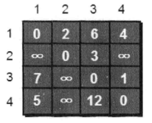
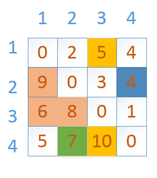
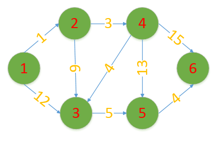
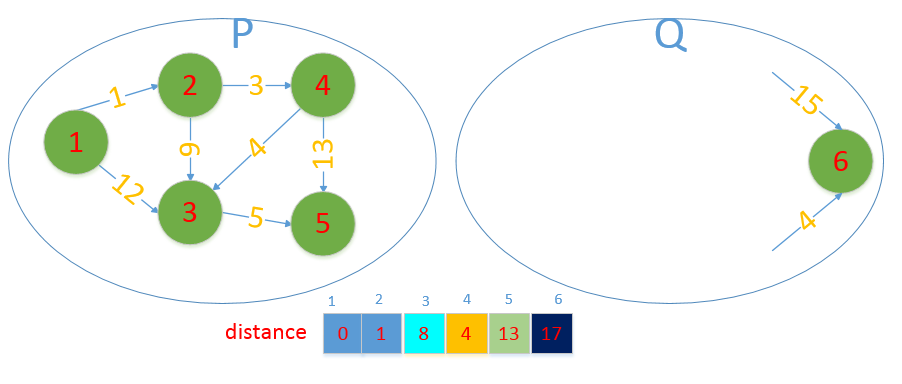
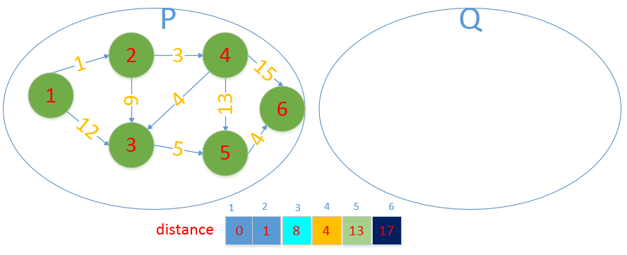

最短路径问题是图论中的一种重要的问题。关于这个问题的详细描述，可以参考一本书《迷茫的旅行商》，书中介绍了各式各样的路径规划问题，还有各种可能的解法，和整个问题的发展历史。看完能对该问题有一个很好的理解，也能够明白，计算机算法是如何在尚不直到该问题的解决方法的时候，一步一步扩展解题的规模，从而使得现在大部分的问题都可以在能够接受的时间复杂度内解决。这里，我们只介绍几个简单的求最短路径的算法，是在算法题目中经常出现的。
多源最短路径问题
在一个图中，找到任意两个点之间的最短路径问题，叫做多源最短路径。
如下图，1，2，3，4表示4个城市，线上的数字表示该路程的距离，求任意两个城市的最短路径是多少。
先来考虑如何才能确定两点之间的最短路径。比如求从城市1到城市3的最短路径，我们可以使用深度优先搜索或者广度优先搜索的方式，从节点1出发，搜索到节点3未知，然后记录所有路径中的最小值，就是1到3的最短路径。
floyd-Warshall 算法
使用宽度优先或者深度优先的方式求两个顶点之间的最短路径还可以，时间复杂度上可以接受，但是求多源最短路问题就显得太复杂了。那么有没有更好的方法呢？
设想一下，从a到b的路程是l,如何缩短这个路程呢？只能试试能不能找到其他的路从a到b，看其他的所有路程中有没有比当前这条路短的。 这就是floyd-Warshall算法的思想。
我们把上面的图存储成下面这种形式：称为e.

floyd-Warshall 算法可以表述为：1
2
3
4
5
6
7
8
9for(int k=1;k<=n;k++){
for(int i=1;i<=n;i++){
for(int j=1;j<=n;j++){
if(e[i][j]>e[i][k]+e[k][j]){
e[i][j] = e[i][k]+e[k][j];
}
}
}
}
具体到这个例子，我们看一下这个算法是如何工作的。
开始的时候，k=1,i=1,j=1,2,3,4; 循环里面比较的是：
e[1][1] > e[1][1] + e[1][1]
e[1][2] > e[1][1] + e[1][2]
e[1][3] > e[1][1] + e[1][3]
e[1][4] > e[1][1] + e[1][4]
然后，k=1,i=2,j=1,2,3,4; 循环里面比较的是：
e[2][1] > e[2][1] + e[1][1]
e[2][2] > e[2][1] + e[1][2]
e[2][3] > e[2][1] + e[1][3]
e[2][4] > e[2][1] + e[1][4]
然后，k=1,i=3,j=1,2,3,4;循环里面的比较是：
e[3][1] > e[3][1] + e[1][1]
e[3][2] > e[3][1] + e[1][2]
e[3][3] > e[3][1] + e[1][3]
e[3][4] > e[3][1] + e[1][4]
然后，k=1,i=4,j=1,2,3,4;循环里面的比较是：
e[4][1] > e[4][1] + e[1][1]
e[4][2] > e[4][1] + e[1][2]
e[4][3] > e[4][1] + e[1][3]
e[4][4] > e[4][1] + e[1][4]
可以看到，当k=1的时候，遍历了每个节点到每个节点的连接，把通过节点1中转的情况全部尝试了一遍，看有没有任何两个节点之间通过节点1中转之后路程会变短。如果会，就把路程更新成这个更短的路程。
K=1执行完之后矩阵的更新情况：
K=2的时候就好理解了。就是尝试经过节点2进行中转。 因为已经是经过节点1中转过后的数据了。所以相当于原始数据经过节点1和节点2中转之后获得的最短的距离。
K=2执行完之后矩阵的更新情况：
k=3的时候同样的道理，经过节点3中转，k=4的时候经过节点4中转。这样最后获得的更新之后的矩阵e就存储了任意两个节点之间的最短路径。
K=3执行完之后矩阵的更新情况：
K=4执行完之后矩阵的更新情况：

这就是floyd-Warshall 算法，其实非常简单，就是逐个尝试使用节点中转是否可以较少距离，然后更新距离。
单源最短路径问题
上面求的是任意两个点的最短距离，如果求某一个点到其余各个点的最短距离，还有效率更高的方法。
求一个特定的点到其他点的最短路径，就是单源最短路问题。
Dijkstr 算法
算法的基本思想： 每次找到离源点最近的一个点，以这个点为顶点进行扩展，最终得到源点到其余各点的最短路径。具体的步骤是：
- 初始化：将所有的顶点分为两部分，已知最短路径的顶点集合P和未知最短路径的顶点集合Q。开始的时候，P中只有源点，因为开始的时候只能直到源点到源点的距离最近，是0. 其余所有的点属于集合Q。
- 设置源点到自己的距离为0.设置源点能够直接到达（不经过别的节点）的顶点的距离为e源点到该点的距离。把所有源点不能直接到达的节点的值设置为无穷大。
- 在集合Q中选择一个离源点距离最近的点加入到P，同时从Q中删除该节点，假设这个节点是u,考察u能到达的所有节点，看是否从源点通过u到达这些节点比原来的距离近，如果近，就更新这个值。
- 重复第三步直到Q为空。
我们举例说明该算法的具体过程：

初始化，P集合中只有源点1，Q集合中是剩下的所有节点。distance数据初始化成图中的样子。
找到结合Q中距离源点最近的节点，是2，加入到P中，2可以到达3和4.此时到3的距离distance中是12，到4的距离distance中是无穷大，如果通过节点2中转，可以得到到3的距离等于10，小于原来的12，到4的距离是4，小于原来的无穷大，所以更新这两个距离。
从集合Q中找一个到集合P最近的节点，是4，把4加入P，同时从Q中删除4，4能够到达的节点是3，5，6，考察通过4能够减少原来distance中的距离。从源点通过4达到3距离是8，比原来的10小，更新；从源点通过4到达5，距离是17，比原来的无穷大小，更新；从源点通过4到达6，距离是19，比原来的无穷大小，更新；
从集合Q中选出距离源点最近的节点，是3，把3加入结合P，同时从集合Q中删除3.看通过3能够使得distance中的各个距离缩小。3只能到达5，从源点通过3到达5的距离是13，小于原来的17，更新；
从集合Q中继续选择距离源点最近的点，是5，加入P，从Q中删除；5只能到达6，通过5到达6距离变成了17，小于原来的19，更新；

集合Q中只剩下一个节点，将它加入P集合，通过它不能达到任何节点，所以算法结束。
此时的distance存储的就是最终的结果。

注意，该算法的时间复杂度是O(N^2)，如果使用邻接表来存储图，时间复杂度可以是O(M),M是边的数量，可以看到，该算法非常高效，但是不能解决带负权边的问题，如果要解的问题权重有负值，可以考虑使用下面提到的方法。
Bellman-Ford 算法
该算法核心代码：1
2
3
4
5
6
7for(int k=1;k<=n-1;k++){
for(i=1;i<=m;i++){
if( distance[[v[i]]] > distance[u[i]] + w[i] ){
distance[[v[i]]] = distance[u[i]] + w[i]
}
}
}
代码当中，n是节点的个数，m是边的个数，distance是记录源点到各个点的最短距离的数组，u,v,w是三个数组，用来存储边的信息，对于边i来说，u[i]是这变的起点，v[i]是这条边的终点，w[i]是这条边的权重。所以，1
2
3if( distance[[v[i]]] > distance[u[i]] + w[i] ){
distance[[v[i]]] = distance[u[i]] + w[i]
}
这段代码的含义就是：如果从源点到节点v[i]的距离 大于 经过节点u[i]再到v[i]的距离，就更新源点到节点v[i]的距离为 distance[u[i]] + w[i]. 这里的操作和dijstra算法是一样的含义。通俗的理解就是，如果通过第i条边能使距离变短，就更新。
那么，所有的边都松弛一边之后会是什么样子呢。为什么最外层还有一个n-1次的循环呢？
让我们通过具体的实例看一下具体情况。
空心小圆圈上的数字是边的编号，distance数组被初始化了。我们用上面的代码进行一轮运算：K=1， i= 1…m 这里m等于5，因为只有5条边。
i = 1, u[1]=2, v[1]=3, distance[v[1]]无穷大，distance[u[1]]+w[1]还是无穷大，所以本次不更新distance数组。
i = 2, distance[v[2]]=无穷，而distance[u[2]]+w[2]=-3,所以distance[v[2]]=-3
i = 3, distance[v[3]]=无穷，而distance[u[3]]+w[3]=5,所以distance[3]=5,
i = 4, distance[v[4]]=5，而distance[u[4]]+w[4]=无穷,所以本次不更新。
i = 5, distance[v[5]]=无穷，而distance[u[5]]+w[5]=无穷，所以本次不更新。
从上面可以看出，所有的边都松弛了一边，但是并没有得到答案，目前为止，我们只得到了源点到2的最短距离，源点到3目前还不是最短距离。所以可以假定，每次遍历一边所有的边，至少能够确定一个顶点的最短距离，所以最多循环顶点的个数减1次就可以了。需要注意的是，并不一定每次遍历一遍边只能确定一个顶点的最短距离，所以n-1次只是上限，如果超过了n-1次，distance数组还在发生变化，那么说明图中存在负权回路，存在负权回路的图是没有最短路径的，因为每绕一圈路径都会缩短。
K=2 完成之后的情况：
k=3 完成之后的情况：
k=4 完成之后的情况：
可以看到，此时已经没有变化了，算法在与上一次相比，distance没有变化之后其实就可以提前结束了。
参考文献：